Record once.
Test every layer.
Export anywhere.
A local QA studio for UI, API, database, email and performance testing — with failures it explains itself. A case study by Md Zarin Tasnim.
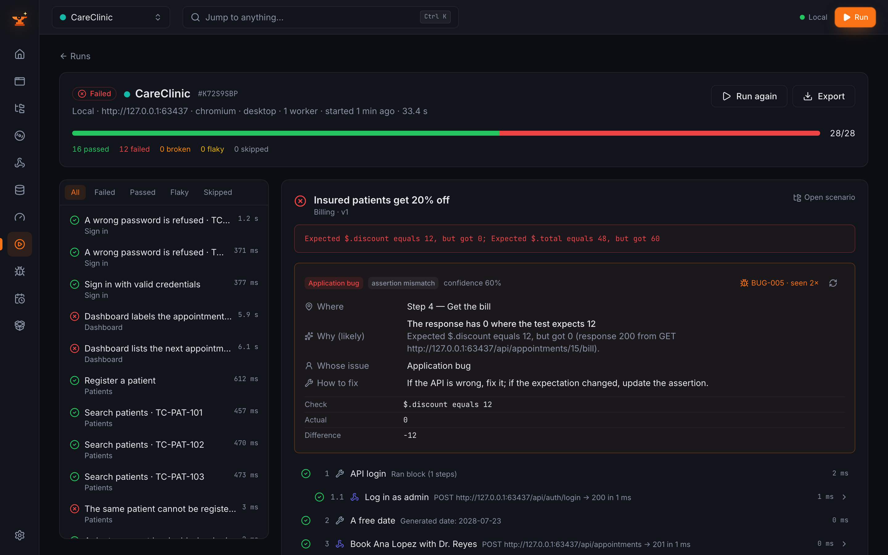
Testing one feature means juggling a different tool for every layer.
A real user journey crosses the UI, the API, the database and the inbox. The tools that test those layers don't talk to each other — and when a test goes red, nobody knows why.
◫Scattered tools
A recorder for the UI, a client for the API, a SQL tool for the data, a mail catcher, a load tester — each with its own login and no shared variables.
✕Red, but why?
A failed run says TimeoutError. Someone still has to dig out whether it's the app, the test, the data or the environment.
↯Brittle scripts
Recorded scripts lock onto one CSS path. A class name changes and half the suite turns red overnight.
⌂Data in the cloud
Cloud test platforms want your credentials, screenshots and test data on their servers.
$Paid per seat
The all-in-one options cost money per user, per month, per parallel run.
⇄Locked in
Tests built in a studio stay in the studio. Moving to code later means starting over.
One local studio for every layer — and it tells you why a test failed.
- Record a journey in a real browser, with smart locators and fallbacks.
- Mix layers in one scenario: UI, API, SQL, email, load.
- Run in parallel on Chromium, Firefox and WebKit, desktop or phone.
- Diagnose every failure: where, why, whose issue, how to fix.
- Export clean code to the framework your team already uses.
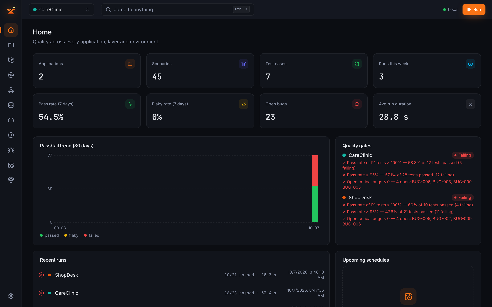
Click through your app. Get a readable, resilient test.
A toolbar inside the browser adds checks, extracts values and masks passwords as you go. Every step stores several locators, so a renamed class doesn't break it.
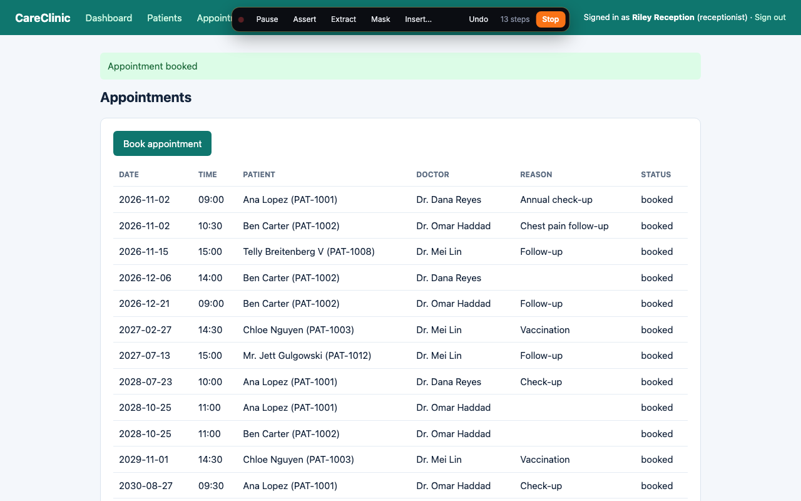
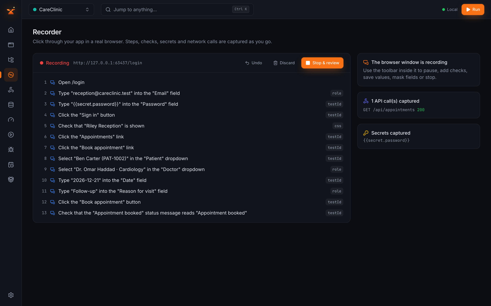
One scenario: fill the form, call the API, check the row.
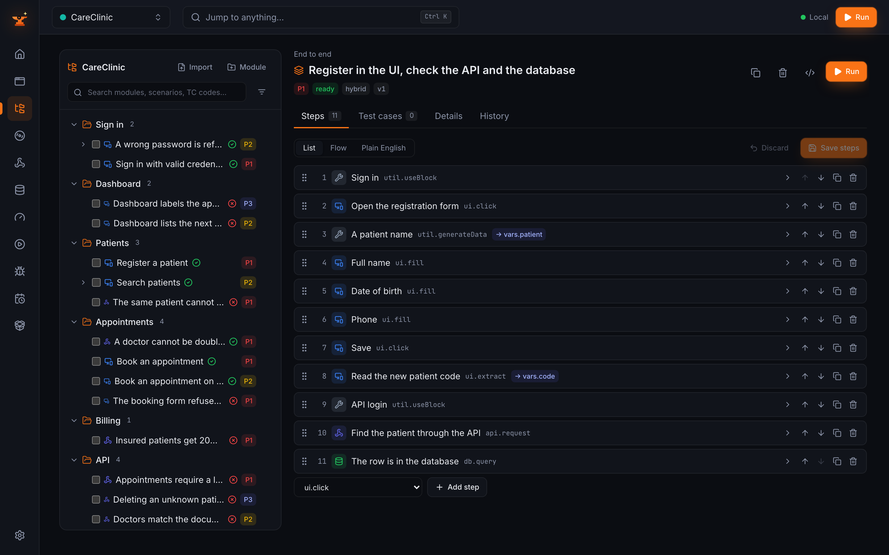
A built-in API client and SQL workbench, safe by default.
Import OpenAPI or Postman, check every response against the contract, and query five database engines. Connections start read-only, with every write rolled back.
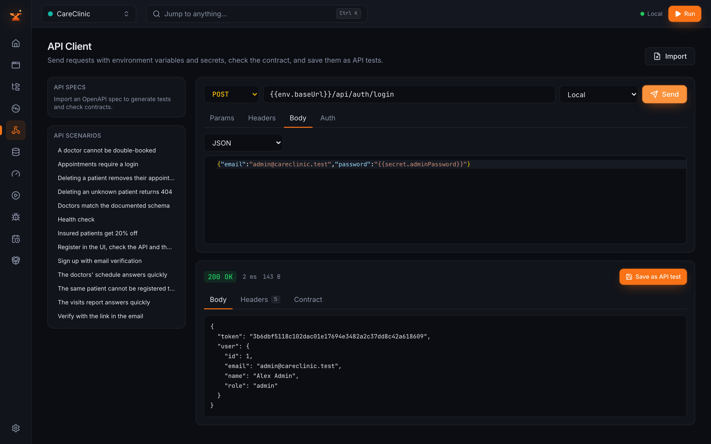
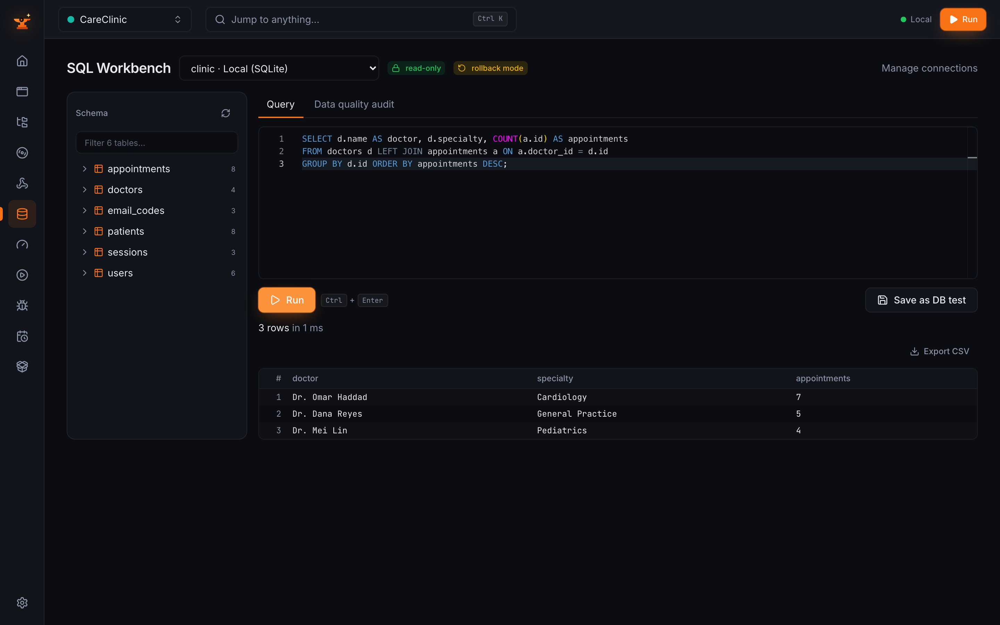
Sign-up flows tested end to end, inbox included.
- A local mail catcher (Mailpit) receives every message — nothing is sent out.
- Steps wait for the email, check the subject and body, and pull out the one-time code or the link.
- The code goes straight into the next UI step.
- A broken verification link fails the test and is reported as a bug.
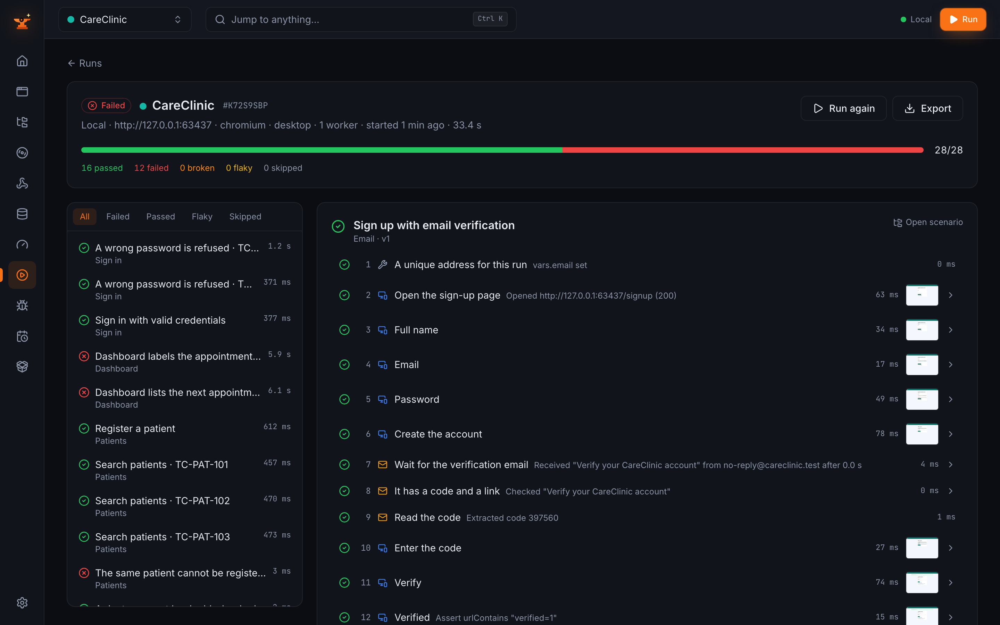
Load tests with thresholds, live charts and a k6 export.
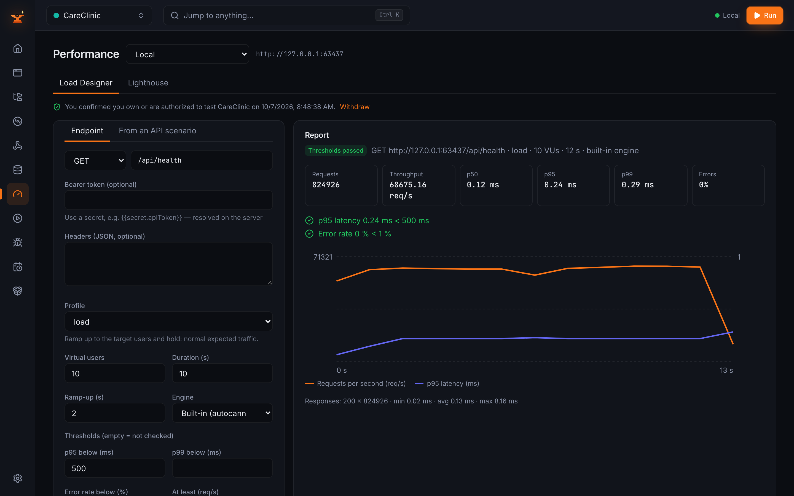
- Smoke, load, stress, spike and soak profiles.
- p95, p99, error rate and throughput thresholds that pass or fail a run.
- Built-in engine, or k6 when installed.
- Response-time checks and Lighthouse for pages.
- Asks you to confirm you own the system before any load test.
Every red test comes with an explanation and a bug report.
A rule engine reads the failed step, the network log, console errors and the DOM, then says where it broke, why, whose issue it is and how to fix it — no AI required.
Know if you can ship, at a glance.
Pass rates by module, layer, tag and environment; flaky-test detection; run comparison; and release gates that turn red when the rules aren't met.
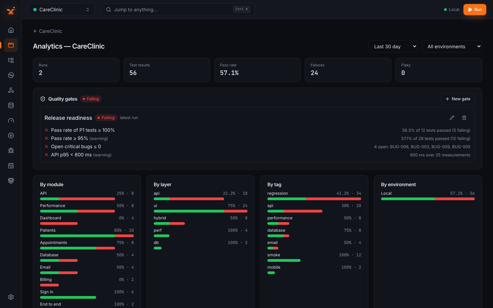
No lock-in: export clean, runnable code.
Secrets become environment variables, CI files are included, and the exported Playwright project is run against the demo app in CI.
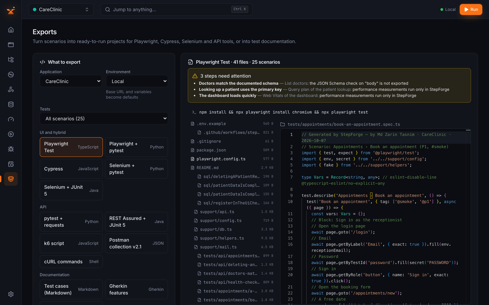
Built like a product, not a demo.
⚿Secrets stay secret
AES-256-GCM at rest, never logged or exported, masked as •••• in the UI, reports and generated code.
⌂Local-first
Binds to 127.0.0.1 only, with a per-session token. One SQLite file. Optional local AI through Ollama — never a cloud API.
✓Explainable diagnosis
Failures are classified by readable YAML rules over captured facts, with unit tests for the rules.
⛁Safe database access
Read-only and rollback by default. Production environments get a red banner and typed confirmation.
◎Self-healing locators
Each step keeps ranked locators — test id, role, label, text, CSS — and suggests a one-click fix when the primary one drifts.
⟲Honest benchmark
Planted bugs are listed in a file StepForge never reads; a guard test fails the build if any app code mentions it.
Two demo apps. 25 planted bugs. Here's what StepForge caught.
| Demo app | Scenarios | Test runs | Planted bugs | Detected | Diagnosed correctly |
|---|---|---|---|---|---|
| CareClinic · clinic | 25 | 29 | 13 | 13 | 12 |
| ShopDesk · shop | 20 | 22 | 12 | 12 | 12 |
Bugs span API, database, UI, email, business logic and performance. Measured by scripts/benchmark.ts on an Apple M3 Pro; bugs are scored afterwards against a manifest StepForge never reads.
Modern, boring, free.
Core
Server & data
Dashboard
Testing engines
Databases
Quality
Md Zarin Tasnim
Need test automation or QA tooling? Let's talk.
Playwright · Cypress · Selenium · API & database testing · CI pipelines · custom QA tools
Source: github.com/YOUR_GITHUB_USERNAME/stepforge